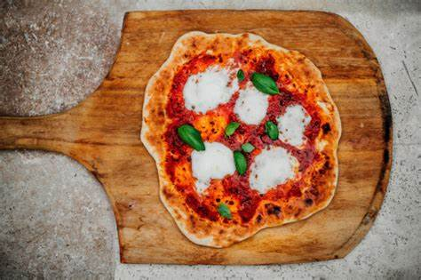

i dag skal vi lære korleis vi lager autentisk italiensk pizza.

ingredienser deig
1kg mel
600ml vatn
30g salt
1g fersk gjær
ingredienser tomatsaus
500g san marzano tomater(boks)
10 basilikum blader
15g salt
topping
buffalo mozzarella
basilikum blader
extra virgin olivenolje
fremgangsmåte
Først balnder vi 10% av melet med vatnet slik at det ligner ein tynn pannekake røre.
I dette blander ein salt som ein blander godt ut og fersk gjær. når ei har gjort
alt dette blander ein resten av melet i deigen. Denne deigen elter vi først i bollen
til den henger sammen og deretter ut på benken i ca 10 min.
Når deigen er ferdig eltet legger vi den til å hvile i ein stor bolle i ca 6-8 timer i
16-18 grader. Når den har stått i 6-8 timer tar du den ut av bollen og deler den i
porsjonstørrelser ca 230 til 280 gram. Sett disse til å heve i ca 16-18 timer i samme tempratur.
Ta deigen ut fra heving og legg dei ut på benken med mel på så dei ikkje henger seg fast.
Begynn først med fingrene og dytt deigen flat. Der du starter fra bunnen av deigen og jobber
deg oppover. Du må la det være ca 1-2 cm kant på deigen. i kanten dytter du all luften som
er i deigen på denne måten lager du ein fin og luftig kant. når du har dyttet all luften i
kanten og deigen begynner og se ut som ein pizza kan vi begynne og strekke deigen. Dette
gjer vi ved å ha det tre midterste fingren på høgre hånden under deigen og dei to andre oppå
, denne hånden skal vi dra med. den andre hånden legger du flat oppå pizzaen. når vi skal dra
pizzaen, drar du deigen, mens venstre hånden holder igjen. deretter hiver du deigen på
armen og hiver den på bordet igjen, heile tiden skal høgre hånden ha samme posisjon.
Denne prossesen fortsetter vi til deigen er passende tykkelse.
Når pizzadeigen er laget skal ein lage tomatsaus. dette gjer ein enkelt ved å blande ta
tomater ut av boksen og knuse desse med hånden til dei har ein fin konsistens. deretter blander ein
salt og basilikum.
vi legger sausen oppå pizzaen sammen med litt olivenolje, ost og basilikum. deretter legger
vi den i ovnen på 400-500 grader i 90- 150 sekunder. (vis du ikkje ha ein slik ovn kan du ta den i
vanleg ovn på pizzastein på den varmeste settngen i ovnen i 7-10 minutter.)